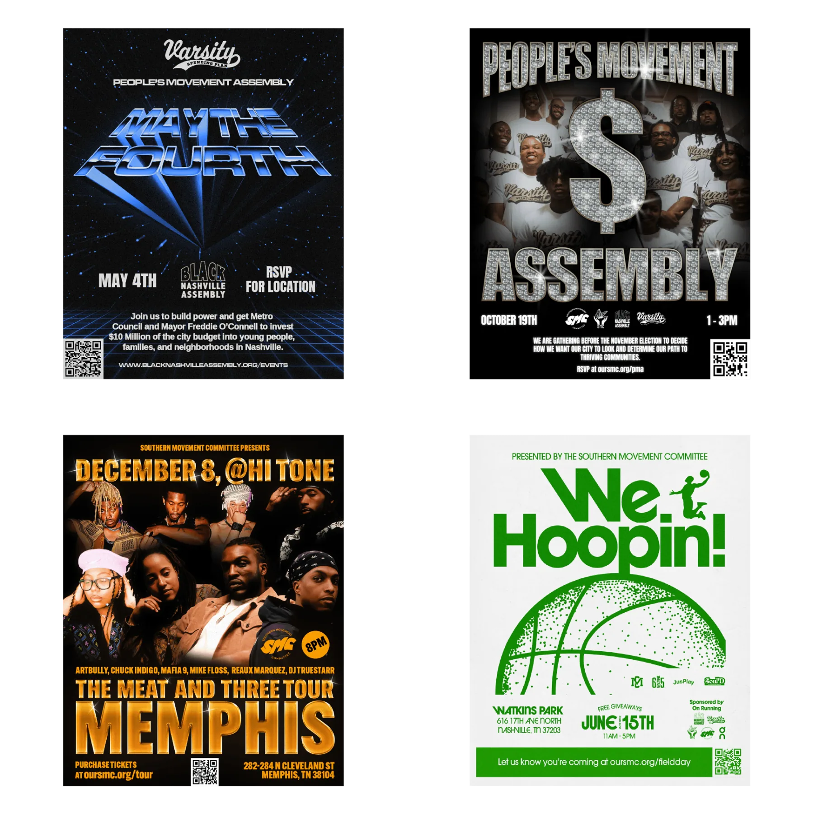
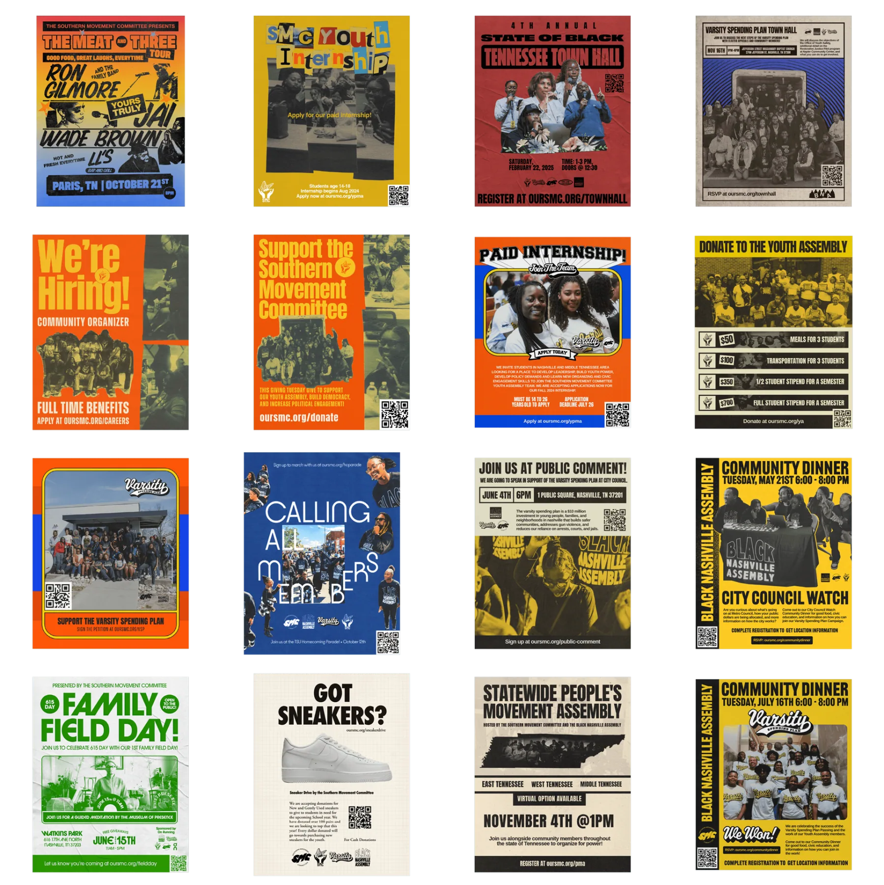
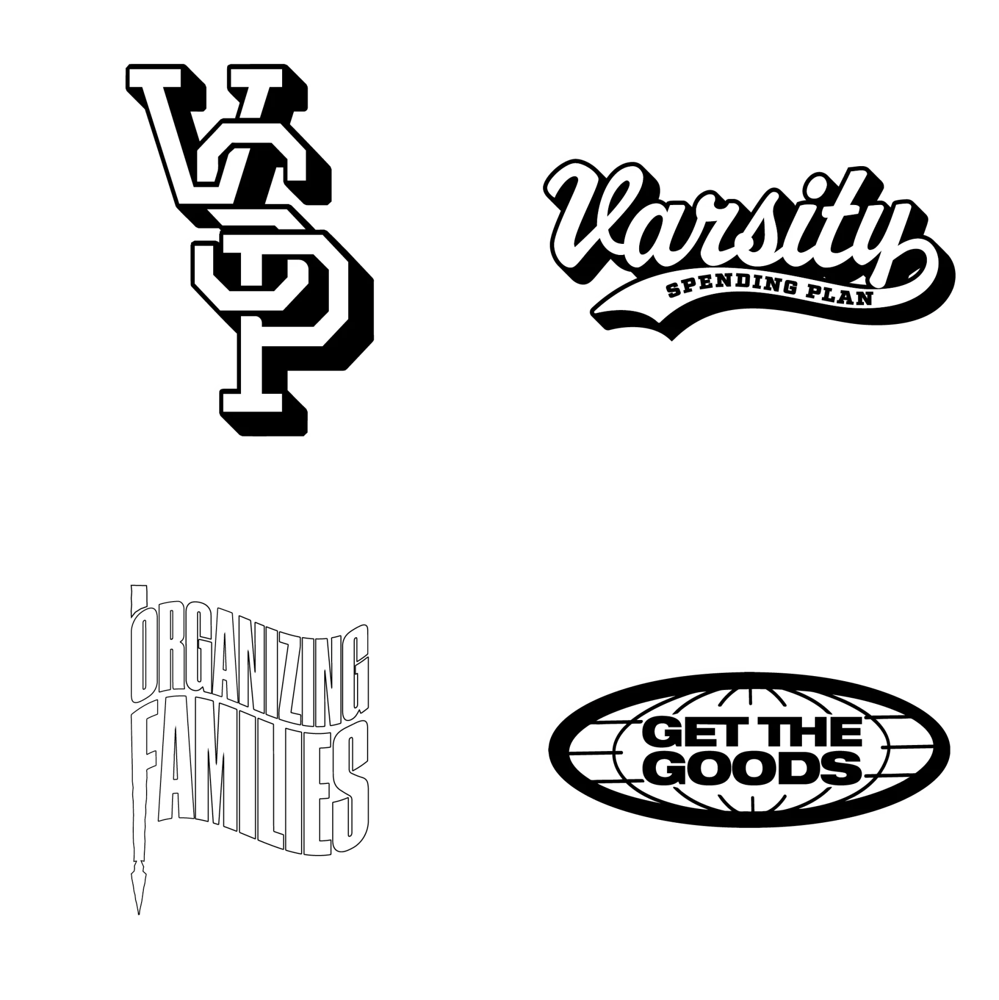
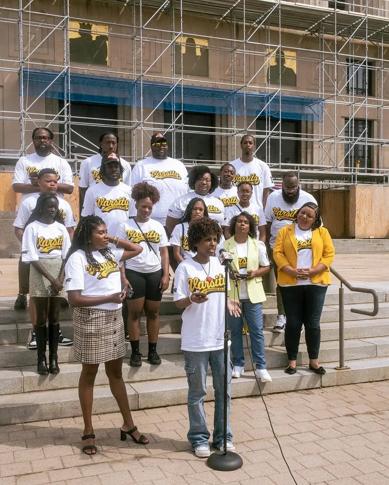
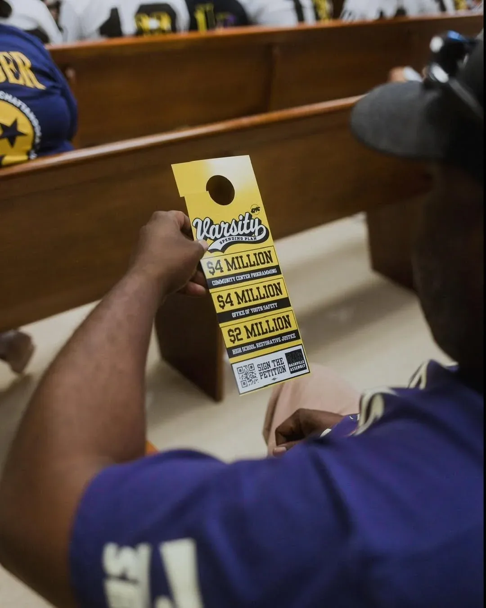
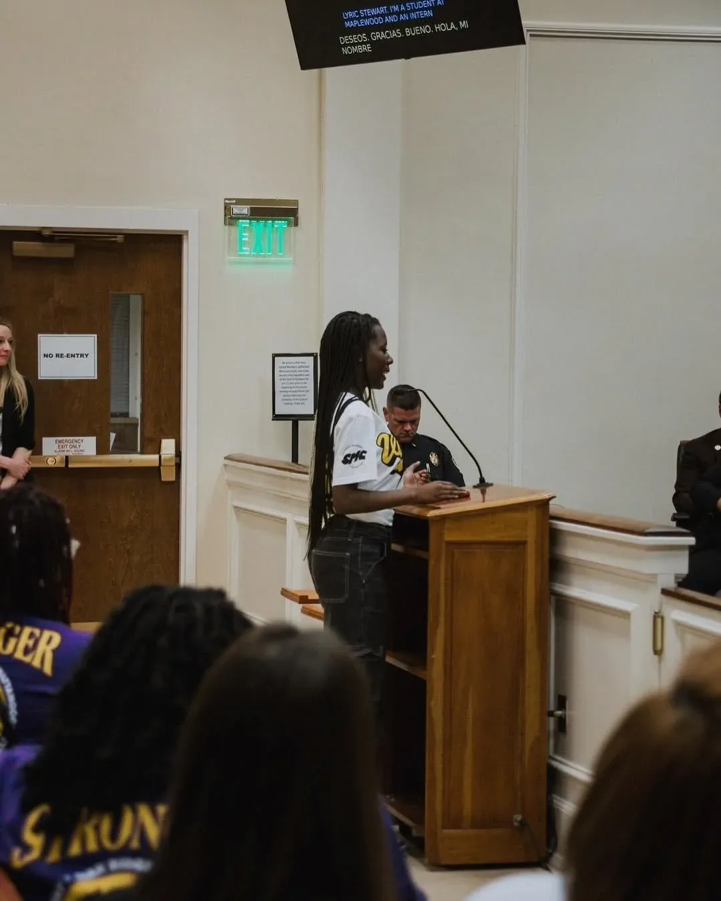
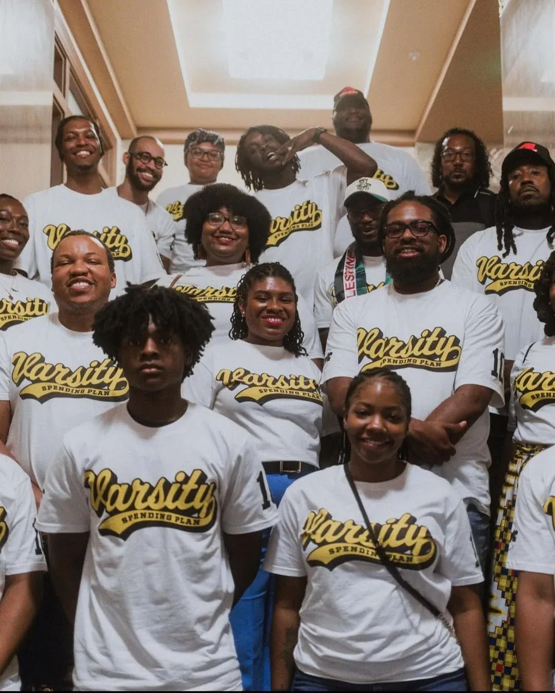

BNA
Working with the Black Nashville Assembly (BNA), I support their initiatives by producing marketing collateral and graphics for both print and digital needs. My work includes designing flyers for student opportunities, town hall meetings, and community support events, helping amplify their mission and engage the community effectively.

The flyers I design serve as a key tool in promoting BNA’s various initiatives. These include student programs, public events, and community support efforts. Each flyer is carefully crafted to be visually appealing and informative, ensuring they effectively communicate the intended message and drive participation.

For BNA’s projects, I create logos and supporting visual elements designed to be responsive and adaptable across different formats. These logos appear on materials such as T-shirts, social media graphics, and printed collateral, helping build a cohesive and recognizable brand identity. The flexibility of these designs ensures they maintain their impact across a variety of applications while reinforcing the organization’s mission.

In 2024, the Black Nashville Assembly and the Southern Movement Committee launched the Varsity Spending Plan (VSP) to secure funding for community programming and restorative justice. As part of this initiative, I designed a comprehensive range of marketing materials, including responsive logos and event-specific graphics. These designs were featured on T-shirts, social media platforms, and posters, effectively raising awareness about the campaign.




The promotional materials were instrumental in increasing engagement, boosting attendance at key events, and fostering pride and unity among supporters. The VSP successfully secured $1 million in funding, with $250,000 directed toward community programming and restorative justice, and $750,000 allocated to the creation of the Office of Youth Safety. This achievement highlights how strategic design can amplify advocacy efforts and create tangible impact.